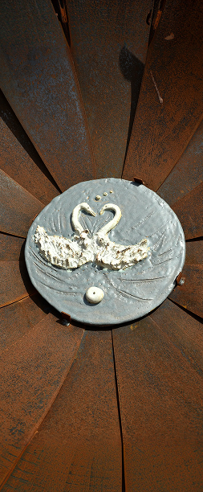
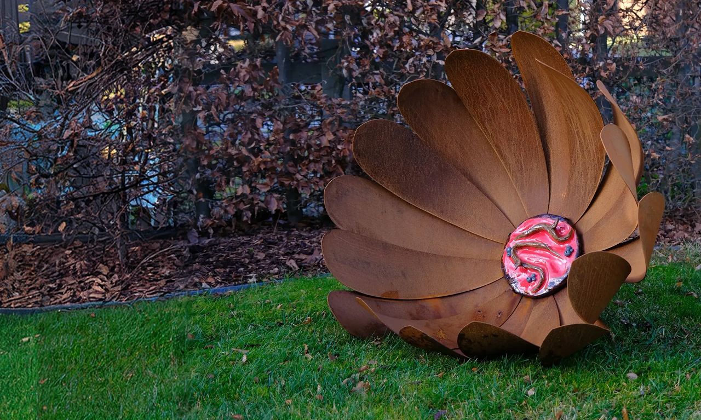
Zultebeke
"Twee kunstenaars, twee materialen en één gedeelde liefde voor kunst en ambacht met een eigen verhaal"
Waar keramiek en cortenstaal elkaar ontmoeten.
De samenwerking tussen Nathalie Wullepit en Lieven Van West brengt twee kunstvormen samen tot één geheel. Het warme roest van cortenstaal en de fleurige kleuren van keramiek vullen elkaar aan. Elk werk nodigt uit om even stil te staan bij de schoonheid van het landschap en het leven.
Twee kunstenaars, één gedeelde visie
Wat begon als een ontmoeting tussen twee makers groeide uit tot een samenwerking. Nathalie creëert organische keramische vormen, terwijl Lieven cortenstaal bewerkt tot krachtige sculpturen. Door beide materialen te combineren ontstaan unieke kunstwerken waarin zachtheid en kracht elkaar versterken.
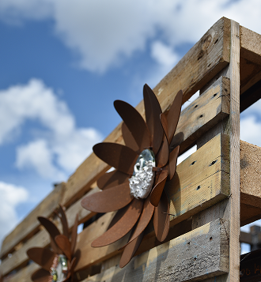
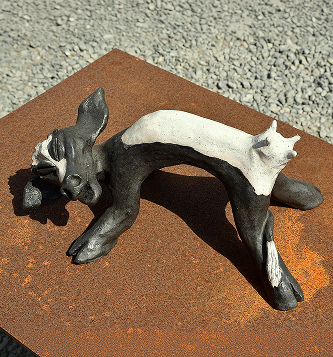
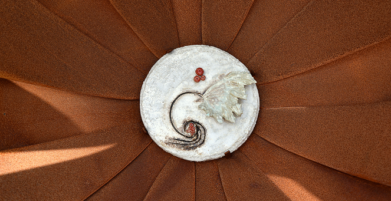
Gezamenlijke werken
Uitgelichte collectie
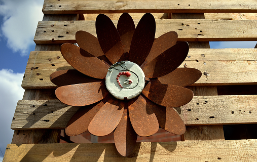
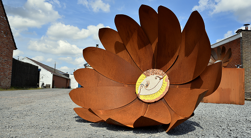
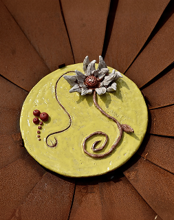
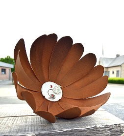
Ontmoet de kunstenaars
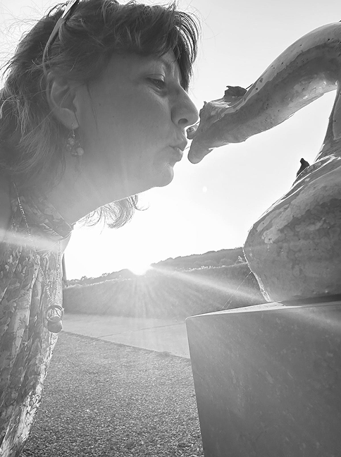
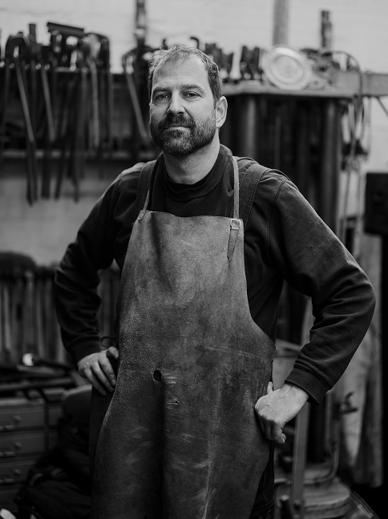
Lieven Van West
Cortenstalen sculpturen waarin vakmanschap en creativiteit samenkomen.
Lieven Van West →